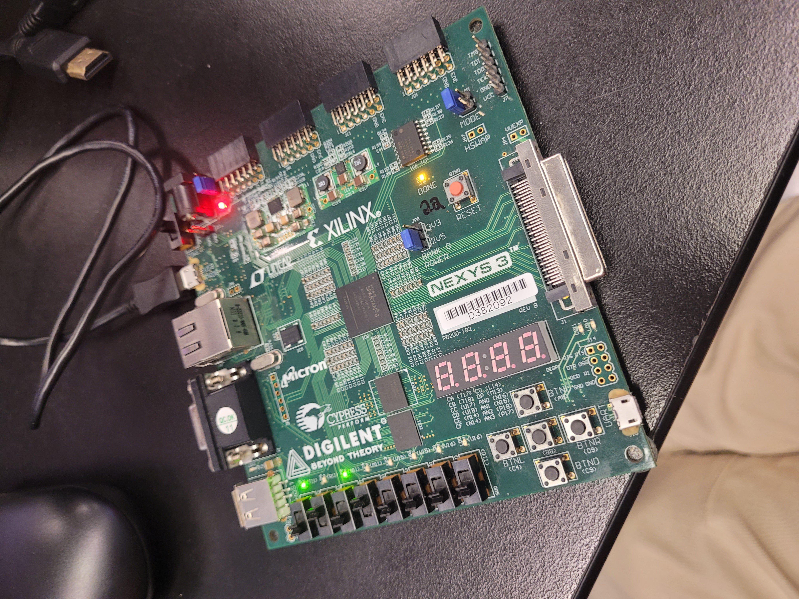

This digital system is a modular 4-bit ALU that performs 12 operations: 8 arithmetic and 4 logical. The ALU accepts two 4-bit operands (A & B), three selection inputs (S2, S1, S0) and a carry input (Cin), and outputs a 4-bit result plus a carry out. Then these results would be shown on the Seven-Segment display. This digital system consists of: a B input logic unit to modify operand B, a full adder based arithmetic unit, a multiplexer-based logic unit, a 1-bit ALU combining both units, a 4-bit ALU created from four 1-bit ALU, and finally a seven-segment decoder.
The design follows a modular and hierarchical structure because this approach mirrors real digital system and CPU data path design, making the ALU easier to construct, verify, and debug. Separating the arithmetic unit, logic unit, B input logic, and full adder into individual components allows each module to perform one well defined function, which improves clarity and ensures that errors can be solved quickly. Using structural VHDL reinforces hardware accurate modeling by explicitly showing how signals flow between modules. Integrating the arithmetic and logic paths with a single select signal (S2) reflects standard ALU design practices and ensures clean operation switching. The seven-segment decoder supports direct hardware verification on the FBGA board.
Function Table - 1-bit ALU
Block Diagram of 4-bit ALU
Printed Simulation Waveform Data